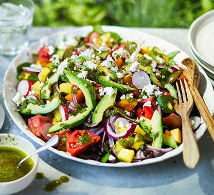

Summer Salad Recipe

Description
This is my favorite summer salad to take to picnics and makes the best of summer-time
vegetables. Add chopped grilled chicken and take it from a hearty salad into an entree.
Ingredients:
- 1 can of black beans
- 2 avocados
- 1/2 bunch fresh coliander or parsley and/or deal
- 1 pint tomato
- 1 large onion
- 1 jalapeno papper
- 1 cucumber
- 1 teaspoon salt
- 1 teaspoon coarse ground black pepper
- 4-5 spoons of oil
- 2-4 spoons of apple cider or lemon juice
Directions:
- chop all the vegetables to the size and shape you like and pour all of them into a big bowl
- Add the oil, apple cider or lemon juice, salt and pepper, herbs and mix all together.
Serve straightaway cold with some main meal like grilled chicken for example.